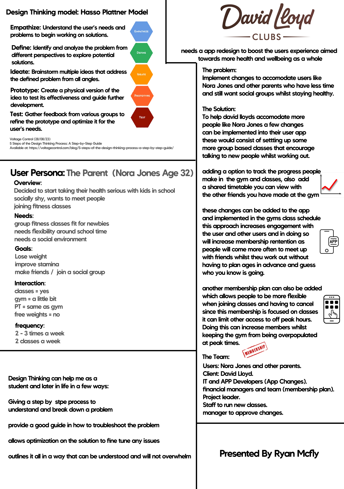

this project was a bit smaller in scale as it was onely 1 a4 poster and i was ill due to covid 19 at the time so there isnt much to say about this project, however i found the principals we were looking at very interesting and how design thinking models can help me in everyday life when doing my other projects

this project was very research based as i went around and learned about the different models and what they do and how to use them, i ended up using the david lloyd business to base my poster off of and created a user persona i think would be present in their demographic but also challenging to problem solve in the context of what they are trying to do with their app in this scenario.